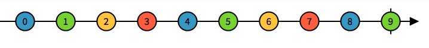
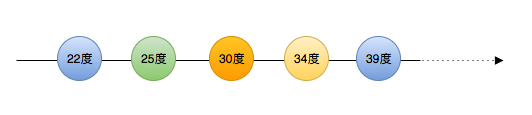
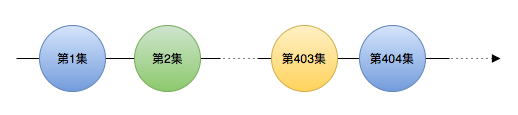
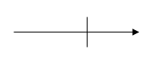

Observable - 可被监听的序列

所有的事物都是序列
之前我们提到，Observable 可以用于描述元素异步产生的序列。这样我们生活中许多事物都可以通过它来表示，例如：
Observable<Double>温度你可以将温度看作是一个序列，然后监测这个温度值，最后对这个值做出响应。例如：当室温高于 33 度时，打开空调降温。

Observable<OnePieceEpisode>《海贼王》动漫你也可以把《海贼王》的动漫看作是一个序列。然后当《海贼王》更新一集时，我们就立即观看这一集。

Observable<JSON>JSON你可以把网络请求的返回的 JSON 看作是一个序列。然后当取到 JSON 时，将它打印出来。

Observable<Void>任务回调你可以把任务回调看作是一个序列。当任务结束后，提示用户任务已完成。

如何创建序列
现在我们已经可以把生活中的许多事物看作是一个序列了。那么我们要怎么创建这些序列呢？
实际上，框架已经帮我们创建好了许多常用的序列。例如：button的点击，textField的当前文本，switch的开关状态，slider的当前数值等等。
另外，有一些自定义的序列是需要我们自己创建的。这里介绍一下创建序列最基本的方法，例如，我们创建一个 [0, 1, ... 8, 9] 的序列：
let numbers: Observable<Int> = Observable.create { observer -> Disposable in
observer.onNext(0)
observer.onNext(1)
observer.onNext(2)
observer.onNext(3)
observer.onNext(4)
observer.onNext(5)
observer.onNext(6)
observer.onNext(7)
observer.onNext(8)
observer.onNext(9)
observer.onCompleted()
return Disposables.create()
}
创建序列最直接的方法就是调用 Observable.create，然后在构建函数里面描述元素的产生过程。
observer.onNext(0) 就代表产生了一个元素，他的值是 0。后面又产生了 9 个元素分别是 1, 2, ... 8, 9 。最后，用 observer.onCompleted() 表示元素已经全部产生，没有更多元素了。
你可以用这种方式来封装功能组件，例如，闭包回调：
typealias JSON = Any
let json: Observable<JSON> = Observable.create { (observer) -> Disposable in
let task = URLSession.shared.dataTask(with: ...) { data, _, error in
guard error == nil else {
observer.onError(error!)
return
}
guard let data = data,
let jsonObject = try? JSONSerialization.jsonObject(with: data, options: .mutableLeaves)
else {
observer.onError(DataError.cantParseJSON)
return
}
observer.onNext(jsonObject)
observer.onCompleted()
}
task.resume()
return Disposables.create { task.cancel() }
}
在闭包回调中，如果任务失败，就用 observer.onError(error!) 来表示。如果获取到目标元素，就用 observer.onNext(jsonObject) 来表示。由于我们的这个序列只有一个元素，所以在成功获取到元素后，就直接调用 observer.onCompleted() 来表示任务结束。最后 Disposables.create { task.cancel() } 表示如果数据绑定被清除（订阅被取消）的话，就取消网络请求。
这样一来我们就将传统的闭包回调转换成序列了。然后可以用 subscribe 方法来响应这个请求的结果：
json
.subscribe(
onNext: { json in
print("取得 json 成功: \(json)")
},
onError: { error in
print("取得 json 失败 Error: \(error.localizedDescription)")
},
onCompleted: {
print("取得 json 任务成功完成")
})
.disposed(by: disposeBag)
这里subscribe后面的onNext,onError, onCompleted 分别响应我们创建 json 时，构建函数里面的onNext,onError, onCompleted 事件。我们称这些事件为 Event:
public enum Event<Element> {
case next(Element)
case error(Swift.Error)
case completed
}
- next - 序列产生了一个新的元素
- error - 创建序列时产生了一个错误，导致序列终止
- completed - 序列的所有元素都已经成功产生，整个序列已经完成
你可以合理的利用这些 Event 来实现业务逻辑。
决策树
现在我们知道如何用最基本的方法创建序列。你还可参考 决策树 来选择其他的方式创建序列。
特征序列
我们都知道 Swift 是一个强类型语言，而强类型语言相对于弱类型语言的一个优点是更加严谨。我们可以通过类型来判断出，实例有哪些特征。同样的在 RxSwift 里面 Observable 也存在一些特征序列，这些特征序列可以帮助我们更准确的描述序列。并且它们还可以给我们提供语法糖，让我们能够用更加优雅的方式书写代码，他们分别是：